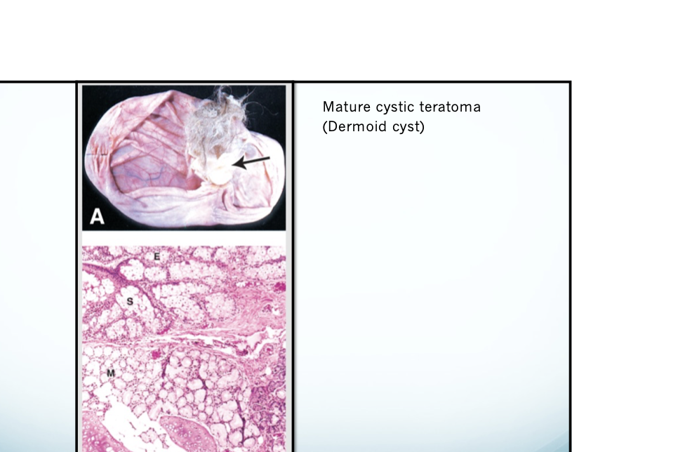
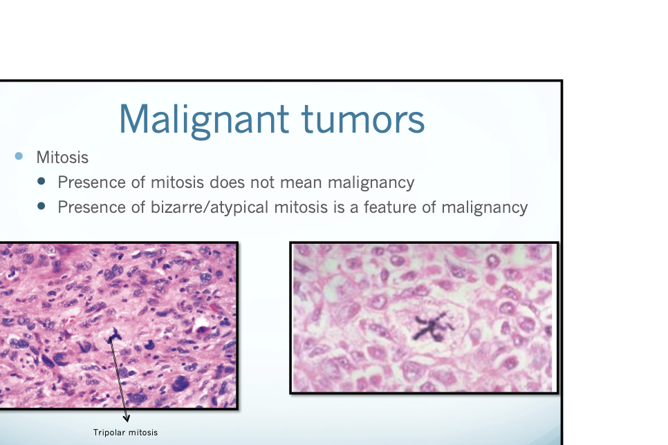
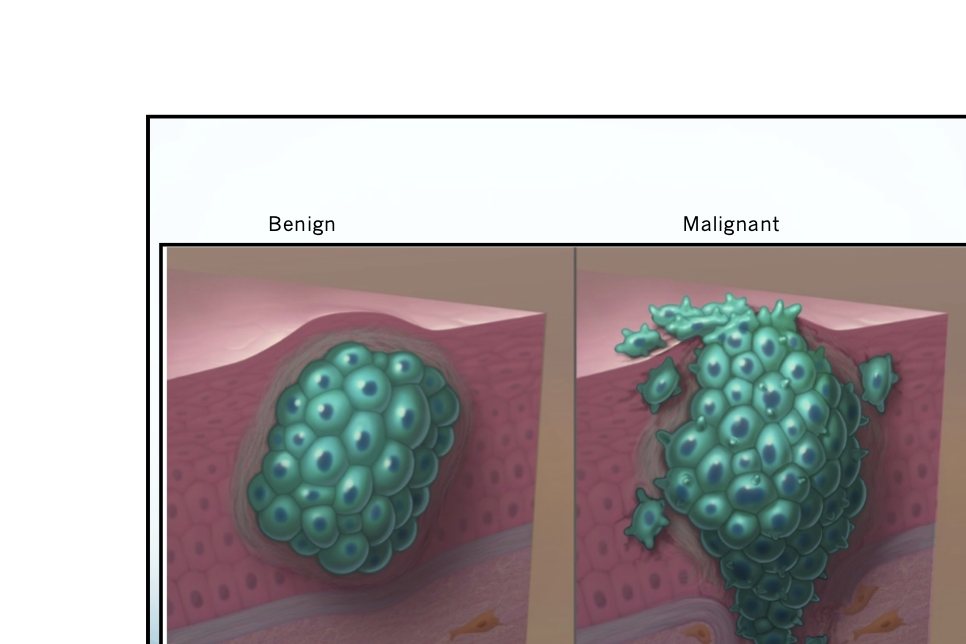
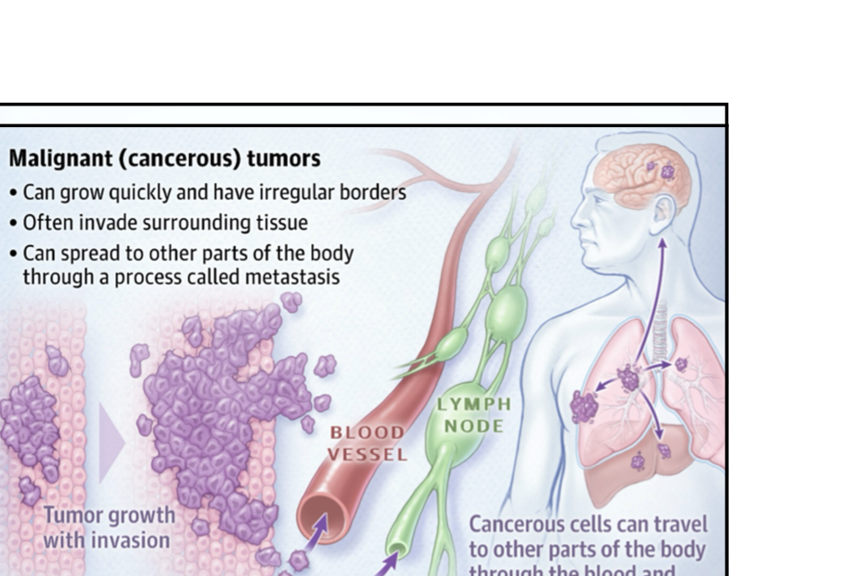
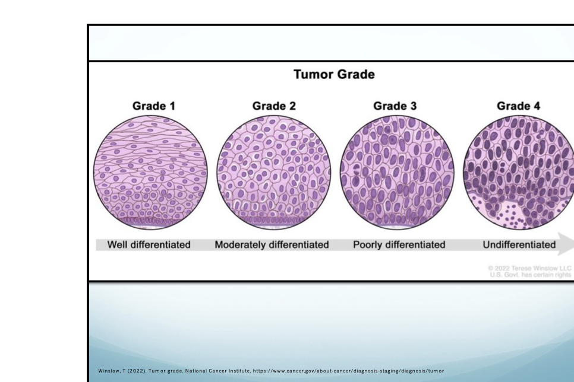
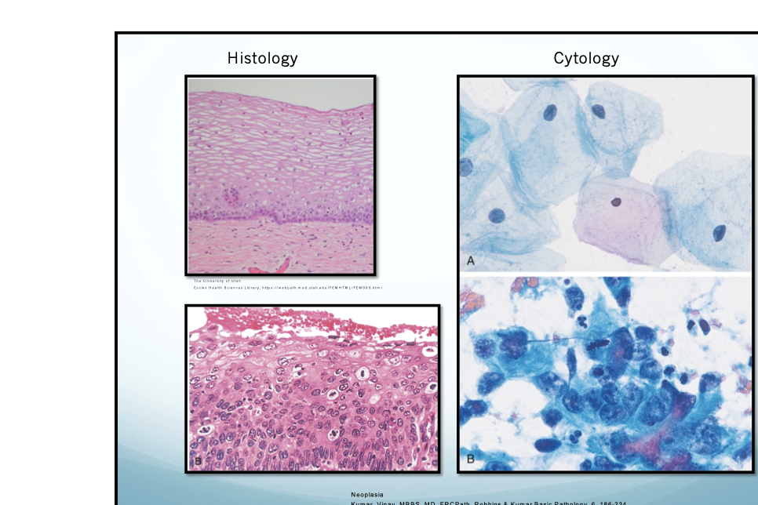

Introduction to Neoplasia
Fundamental Features of All Neoplasia
- Neoplasm = genetic disorder caused by DNA mutations
- Tumors arise from accumulation of multiple genetic alterations
- Results in abnormal growth that persists even after the initiating factor is removed
- Governed by survival of the fittest — clonal selection of cells with growth advantage
🧩 Parenchyma
The actual tumor cells — the neoplastic component
🕸️ Stroma
Reactive connective tissue, blood vessels, etc. that supports the tumor
Tumor Nomenclature
The primary descriptor of any tumor is the cell or tissue of origin. The suffix -oma is added for all tumors.
| Category | Tissue of Origin | Benign | Malignant | Examples |
|---|---|---|---|---|
| Epithelial | Glandular / secretory | Adenoma | Adenocarcinoma | Colonic adenocarcinoma |
| Epithelial | Squamous epithelium | Papilloma | Squamous cell carcinoma | Skin SCC |
| Mesenchymal | Fibrous tissue | Fibroma | Fibrosarcoma | — |
| Mesenchymal | Cartilage | Chondroma | Chondrosarcoma | — |
| Mesenchymal | Fat | Lipoma | Liposarcoma | — |
| Mesenchymal | Bone | Osteoma | Osteosarcoma | — |
| Mesenchymal | Blood vessels | Hemangioma | Angiosarcoma | — |
| Blood cells | Leukocytes | — | Leukemia / Lymphoma | CML, Hodgkin's lymphoma |
Not everything that ends in -oma is benign! Notable exceptions include:
- Mixed tumors — neoplastic cells can differentiate into both epithelial AND mesenchymal (divergent differentiation). E.g., Pleomorphic adenoma (parotid gland)
- Teratoma — contains tissue from ≥1 germ cell layers; arise from totipotent germ cells in ovary, testis, or abnormal midline embryonic rests. Can differentiate into any cell type.
- Hamartoma — tissue elements normally found at the site, growing in a haphazard manner. Have clonal chromosomal aberrations. Considered benign. Mimics a neoplasm on imaging (e.g., pulmonary "coin lesion").

Characteristics: Benign vs. Malignant Neoplasms
| Feature | 🟢 Benign | 🔴 Malignant |
|---|---|---|
| Differentiation | Well-differentiated; resembles tissue of origin | Well to poorly differentiated; pleomorphic cells; may be anaplastic |
| Growth rate | Usually slow; mitotic figures rare and normal | Slow to rapid; mitotic figures may be abundant & atypical |
| Necrosis | Absent | Present — rapidly growing tumors outgrow their vascular supply → coagulative necrosis |
| Local invasion | Cohesive, well-demarcated, expansile. May be encapsulated. Does NOT invade surrounding tissue. | Poorly demarcated, invasive/infiltrative. May have pseudo-capsule if slow-growing. |
| Metastasis | Absent | Present |
| Functional | Retains functional capability (e.g., endocrine adenomas can secrete hormones) | Variable; may lose functional differentiation |
- Pleomorphism — variation in cell shape and size
- Abnormal nuclear morphology — disproportionate N:C ratio; irregular nuclear borders; hyperchromasia; multiple large nucleoli
- Atypical/bizarre mitoses — presence of mitosis alone ≠ malignancy, but atypical mitoses (e.g., tripolar mitosis) = feature of malignancy
- Loss of polarity and architectural disarray

Key Definitions
"New growth." Autonomous growth of tissue that has escaped normal restraints on cell proliferation. Persists even after the initiating stimulus is removed.
Lack of differentiation. De-differentiated, poorly differentiated cells. Indicates how far a malignant tumor has diverged from its tissue of origin.
Replacement of one differentiated cell type with another. Associated with injury and repair. May undergo malignant transformation if the offending agent persists.
Example: Barrett's esophagus — squamous epithelium replaced by intestinal columnar epithelium.
"Disordered growth." Dysplastic cells exhibit pleomorphism, increased N:C ratio, hyperchromasia, loss of differentiation, and architectural disarray. Precursor to malignancy; may be reversible if stimulus removed.
Differentiation = the extent to which neoplastic cells resemble their normal parenchymal counterpart (morphologically AND functionally).
Anaplasia = the lack of differentiation. The more anaplastic, the less it resembles the cell of origin.
Local Invasion vs. Metastasis
Local Invasion — Benign Tumors
- Grow as cohesive, expansile masses
- Remain localized to site of origin
- Lack capacity to invade or metastasize
- Grow slowly; may develop a capsule
- Lack of capsule alone ≠ malignant
Local Invasion — Malignant Tumors
- Poorly demarcated from surrounding tissue
- Infiltrate adjacent structures; lack a well-defined plane
- Slowly-growing malignant tumors may develop a pseudo-capsule
- Invasiveness + metastasis = reliable malignancy indicators

Spread of tumor to sites that are physically discontinuous with the primary tumor.
- All malignant tumors have the capacity to metastasize, but some rarely do (e.g., basal cell carcinoma of skin, CNS gliomas)
- Features ↑ likelihood of metastasis: lack of differentiation, aggressive local invasion, rapid growth, large size
Carcinoma-in-Situ vs. Invasive Tumor
Carcinoma-in-Situ (CIS)
- Severe dysplasia involving the full thickness of the epithelium
- Does NOT penetrate the basement membrane
- Has all cytologic features of malignancy
- High probability of progression to invasive cancer if untreated
- Common sites: skin, cervix, breast (DCIS), urinary bladder
- Treatable / potentially curable at this stage
Invasive Carcinoma
- Penetrates the basement membrane into surrounding stroma
- Can access lymphatics and blood vessels → metastasis
- TNM Stage ≥ T1 by definition
- Dramatically changes prognosis and treatment
- Example: DCIS → invasive ductal carcinoma of breast
Desmoplasia
Desmoplasia = the induction of excessive dense fibrous (connective) tissue by a malignant tumor within and around the tumor stroma.
- Commonly seen in breast carcinoma (causes the palpable hard mass) and pancreatic carcinoma
- Desmoplastic reaction = sign of invasive tumor because it requires tumor-stroma interaction (tumor cells penetrating beyond their normal boundaries, triggering reactive stroma)
- Non-invasive / in-situ tumors typically lack a desmoplastic reaction (no stroma to react)
- Therefore: presence of desmoplasia → invasive tumor; absence → may still be in-situ
3 Common Pathways of Tumor Spread
1. Direct Seeding of Body Cavities
Most often the peritoneal cavity; also pleural, pericardial. Can cause malignant effusions. Classic: ovarian carcinoma → peritoneal seeding / omental implants.
2. Lymphatic Spread
Most common pathway for carcinomas. Follows natural lymphatic routes. Sentinel node = first regional lymph node receiving lymph from primary tumor → used for prognosis and staging (e.g., breast, melanoma).
3. Hematogenous Spread
Most common for sarcomas. Via thin-walled veins. Liver and lung are the most common metastatic sites (portal venous and systemic venous drainage, respectively).
- Carcinomas → prefer lymphatic spread first
- Sarcomas → prefer hematogenous spread
- Liver receives blood from portal vein (GI tumors metastasize here) and hepatic artery
- Lung receives all systemic venous drainage → any tumor can reach here

Paraneoplastic Syndromes
Clinical signs and symptoms attributed to underlying malignancy but NOT due to tumor invasion or metastasis. Caused by tumor production of hormones/peptides/immune mediators that cause metabolic derangements or immune-mediated damage.
- Early detection — paraneoplastic symptoms may be the first sign of malignancy
- Can cause life-threatening symptoms independent of tumor burden
- Most associated with: lung, breast, and hematologic malignancies
- Affected systems: nervous, endocrine, cardiovascular, skin, hematologic
| Syndrome | Mediator | Associated Cancer(s) | Key Features |
|---|---|---|---|
| Hypercalcemia Most Common PNS | PTHrP (PTH-related protein), TNF, TGF-α, IL-1 | Lung, breast, kidney, ovaries | Weakness/lethargy, N/V, altered mental status, bradycardia, acute renal failure |
| Cushing's Syndrome Most Common Endocrinopathy | Ectopic ACTH / pro-opiomelanocortin | Small cell lung carcinoma, pancreatic tumors, thymic tumors | HTN, weight gain, moon face, buffalo hump, ↓muscle mass, hyperglycemia, poor wound healing, purple striae, depression |
| SIADH | Ectopic ADH | Small cell lung carcinoma | Hyponatremia, confusion, seizures |
| Neuromyopathic PNS | Immune-mediated (antigen mimicry tumor vs. normal tissue → autoimmune damage) | Lung, breast | Peripheral neuropathy, encephalitis, myasthenia gravis-like |
| Cachexia | TNF (cachectin), IL-1, IL-6 | Many (especially advanced cancer) | Skeletal muscle loss ± fat loss, anorexia, fatigue, anemia, edema, taste changes; cannot be fully reversed by nutritional support |
- Osteolytic bone destruction by cancer (NOT paraneoplastic — direct bone invasion)
- Humoral production of PTHrP, TNF, TGF-α, IL-1 → ↑ serum calcium (true paraneoplastic)
PTHrP is structurally similar to PTH and functions similarly to raise serum Ca²⁺. Normally produced in trace amounts by keratinocytes.
Grading vs. Staging
📊 Grading
- Based on degree of differentiation of tumor cells (cytologic appearance)
- Features used: cellular differentiation, mitosis count, necrosis, architectural features (gland formation vs. solid sheets)
- Scale: typically Grade 1–3 or 1–4 (higher = less differentiated)
- Some tumors have unique grading systems (e.g., Gleason for prostate)
- Histologic grade ≠ always correlates with biologic behavior
📍 Staging
- Based on the extent / anatomic spread of the malignancy
- Factors: primary tumor size/invasion, lymph node involvement, distant metastasis
- Offers more clinical value than grading (prognosis, treatment, clinical trials)
- Most common system: AJCC TNM
- Stage 0 (CIS) → Stage IV (distant metastasis)

T — Tumor
TX— cannot be assessedT0— no evidence of primary tumorTis— carcinoma in situT1–T4— ↑ size or depth of invasion
N — Nodes
NX— cannot be assessedN0— no regional node involvementN1–N3— ↑ number of nodes involved
M — Metastasis
M0— no distant metastasisM1— distant metastasis present
| Stage | Description |
|---|---|
| Stage 0 | Carcinoma in situ (Tis, N0, M0) |
| Stage I | Small, confined to organ (T1, N0, M0) |
| Stage II–III | Larger size, local invasion, spread to adjacent tissue, ± regional nodes |
| Stage IV | Distant metastasis (any T, any N, M1) |
cTNM — Clinical staging: based on exam, imaging, biopsy; done within ~4 months of diagnosispTNM — Pathologic staging: based on tissue after surgical excision (more accurate)yTNM — post-therapy stagingrTNM — recurrence after disease-free interval
Example: Breast cancer stage cT2N1M1
Laboratory Diagnosis / Testing Modalities
| Modality | What It Does | Key Uses / Examples |
|---|---|---|
| Histology | Microscopic examination of tissue sections | Degree of differentiation; depth of invasion. Frozen section = rapid intraoperative diagnosis. |
| Cytology | Examination of individual cells | Fine needle aspiration (FNA) — thyroid, breast, salivary glands; Papanicolaou (Pap) test — cervical neoplasia screening, bladder, lung, fluids |
| Immunohistochemistry (IHC) | Antigen–antibody binding to detect specific cellular antigens | Identify origin of metastatic tumors (thyroglobulin = thyroid; PSA = prostate); prognostic/therapeutic (ER/PR in breast cancer; desmin for muscle tumors) |
| Flow Cytometry | Measures cell surface markers in suspension | Diagnosis of leukemia and lymphoma (cell lineage, clonality) |
| Tumor Markers | Any substance (enzyme, hormone, specific protein) that provides info about presence/absence of malignancy | PSA (prostate), CA-125 (ovarian), CEA (colon). Low sensitivity/specificity alone — must use with clinical/radiologic data. Used for surveillance and monitoring therapy. |
| Molecular Analysis / Cytogenetics | PCR, FISH to detect gene rearrangements/mutations | Diagnosis: Philadelphia chromosome (BCR-ABL) in CML. Prognosis: HER-2/neu in breast. Minimal disease detection. Hereditary predisposition: BRCA1/2. Therapy guidance: BCR-ABL → imatinib (Gleevec). |

Epidemiology & Hallmarks of Cancer
- Cancer = 2nd leading cause of death in the US (after heart disease)
- Most common in men: Prostate, Lung, Colorectal
- Most common in women: Breast, Lung, Colorectal
- Death rates ↓ due to: ↓ tobacco use, improved screening (mammography, colonoscopy, Pap smear), improved treatment
- Incidence ↑ with age (somatic mutation accumulation; ↓ immune surveillance)
- Pediatric tumors more often associated with inherited mutations
Acquired predisposing factors: chronic inflammation (↑ cell replication + ROS DNA damage), precursor lesions (hyperplasia → metaplasia → dysplasia), immunodeficiency (esp. T-cell; ↑ oncogenic virus-related cancers)
- Compression, invasion, or replacement of healthy tissue
- Ulceration of surfaces (bleeding, infection risk)
- Hormone release — both endocrine and non-endocrine tumors can produce hormones → paraneoplastic symptoms
- Cachexia/Wasting — mediated by TNF-α (cachectin), IL-1, IL-6; cannot be fully reversed by nutrition alone
Table Quizzes
Use these as quick recall drills. Try to answer from memory before revealing the right column.
| Prompt | Reveal | Answer |
|---|---|---|
| What is the main naming principle for tumors? | Cell or tissue of origin is the primary descriptor; -oma is added for tumors. |
|
| Benign gland-forming epithelial tumor? | Adenoma |
|
| Malignant gland-forming epithelial tumor? | Adenocarcinoma |
|
| Malignant mesenchymal tumors usually end in what suffix? | -sarcoma |
|
Name two important malignant exceptions to the usual benign-sounding -oma rule. |
Melanoma, lymphoma, mesothelioma are classic exceptions. |
|
| What is the difference between parenchyma and stroma? | Parenchyma = tumor cells; stroma = supportive connective tissue, vessels, and surrounding framework. |
| Prompt | Reveal | Answer |
|---|---|---|
| What is the single most reliable feature that distinguishes benign from malignant neoplasms? | Metastasis |
|
| What must a carcinoma breach to become invasive? | The basement membrane |
|
| What are the three major pathways of tumor spread? | Seeding of body cavities, lymphatic spread, and hematogenous spread |
|
| Which route is classically favored by carcinomas? | Lymphatic spread |
|
| Which route is classically favored by sarcomas? | Hematogenous spread |
|
| What is the difference between grading and staging? | Grade = degree of differentiation/aggressiveness; stage = extent of spread, often by TNM. |
|
| Which diagnostic modality preserves tissue architecture: histology or cytology? | Histology |